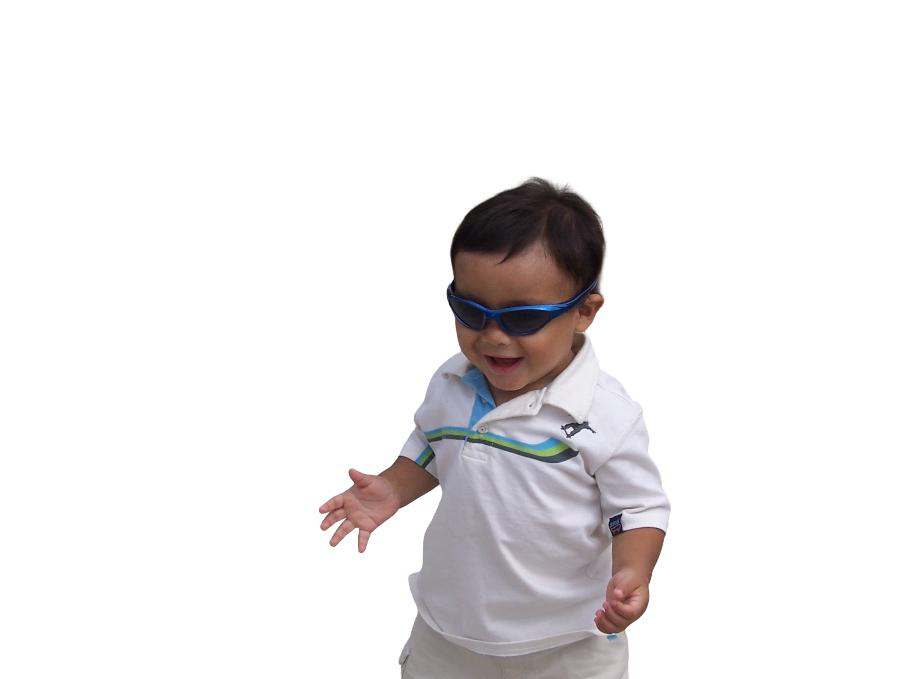
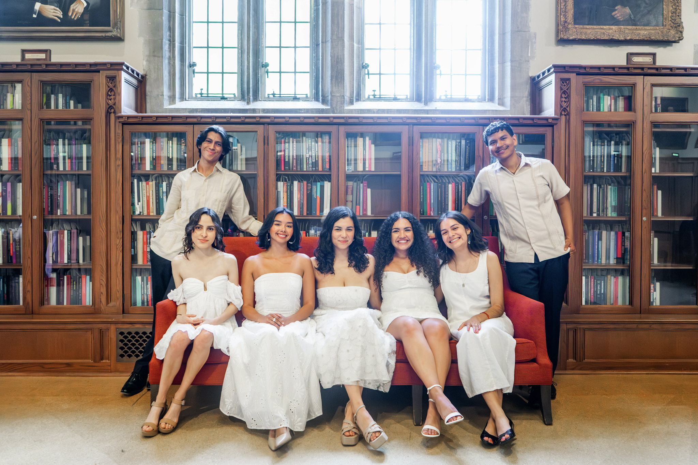

<!-- This is the home page for nathanamaldonado.io. It includes a hero section, an about me section, and a blog section. 
<!DOCTYPE html>
<html lang="en">
<head>
    <meta charset="UTF-8">
    <meta name="viewport" content="width=device-width, initial-scale=1.0">
    <title>Nathan Maldonado - Home</title>
    <link rel="stylesheet" href="styles.css">
    <style>
@import url('https://fonts.googleapis.com/css2?family=BBH+Bogle&display=swap');
</style>
</head>
<body>

<header class="navigation-bar">
    <a href="/index.html">NATHAN MALDONADO</a>
    <nav>
        <a href="#">Portfolio</a>
        <a href="#">Blog</a>
    </nav>
</header>

  <section class="hero">
    <h1>NATHAN<br>J'AN</h1>
    
</section>


<section class="recent">
  <div class="about-me">
    <h2>I'm Nathan J'an Maldonado</h2>
    <p>
I went to Duke, where I studied linguistics, computer science, and psychology. Primarily, I am interested in computing as a social tool for media, literacy, and education advocacy. I also got five face piercings at once and am waiting for the day I suddenly wake up as nepo-baby Julian Casablancas… but that’s not super relevant.    </p>

  </div>

  <div class = "interests">
  </div>
</section>

<section class="blog-nav">
  <h2>LATEST ENTRIES</h2>

  <div class="grid">

    <div class="card">
      
      <h3>Company Hire</h3>
      <p>Listen to me tell you a little story from my junior year while recruiting. Remember, I could always be a banker.</p>
      <a href="./blogs/blog.html">Read more</a>
    </div>

    <div class="card">
      
      <h3>Rooftop Korean</h3>
      <p>Before going out, my friends ask to hear my goal for the night. Truthfully, it is always to end up either on a rooftop or basement. Korea was no different.</p>
      <a href="#">Read more</a>
    </div>

    <div class="card">
      
      <h3>Homecoming</h3>
      <p>I have only ever wanted to love as much as I can and hurt as few people in the process. Here's what I have to say about dating at Duke.</p>
      <a href="#">Read more</a>
    </div>

  </div>
</section>


<footer class="footer">
  <p>NATHAN MALDONADO</p>
  <p>nathan.maldonado@duke.edu
  </p>
  <div class="social">
    <a href="https://www.linkedin.com/in/nathanmaldonado/" target="_blank" rel="noopener noreferrer">LinkedIn</a>
    <a href="https://github.com/nathanamaldonado/" target="_blank" rel="noopener noreferrer">GitHub</a>
    <a href="https://www.instagram.com/antilowincome/" target="_blank" rel="noopener noreferrer">Instagram</a>
  </div>
</footer>

</body>
</html>
-->